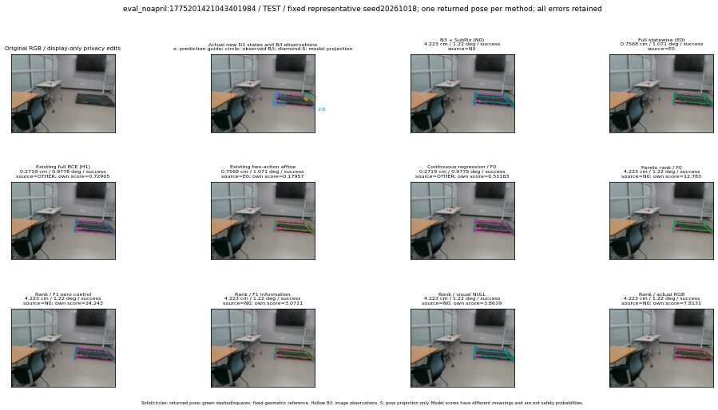

실선은 반환 자세, 초록 점선은 고정 기하 참조입니다. S는 영상 관측이 아닙니다. 점수는 모델별 의미가 다르며 보정된 안전 확률이 아닙니다. 개인정보 처리는 표시 사본에만 적용했습니다.
| 방법·seed | 위치 / 회전 / 공동성공 | 실제 출처 | 선택 후보 | 각 모델 자체 점수 |
|---|---|---|---|---|
| N0 | 4.223 cm / 1.22 deg / success | N0 | N/A | N/A |
| E0 | 0.7568 cm / 1.071 deg / success | E0 | N/A | N/A |
| E0_REGENERATED | 0.7568 cm / 1.071 deg / success | E0 | E0_REGENERATED | N/A |
| POSEFIX_SUBPIX_PF_ANCHOR | 0.5685 cm / 0.9688 deg / success | OTHER | N/A | N/A |
| POSEFIX_SUBPIX_YOLO_ANCHOR | 0.5685 cm / 0.9688 deg / success | OTHER | N/A | N/A |
| D1_H1_MLP_s20261018 | 0.2719 cm / 0.9778 deg / success | OTHER | WD0/ORIGINAL_WD/sample/1 | 0.7290486097335815 |
| D1_H1_MLP_s20261019 | 0.2719 cm / 0.9778 deg / success | OTHER | WD0/ORIGINAL_WD/sample/1 | 0.6544122099876404 |
| D1_H1_MLP_s20261020 | 0.2719 cm / 0.9778 deg / success | OTHER | WD0/ORIGINAL_WD/sample/1 | 0.2684116065502167 |
| D1_H1_PAIR_MLP_s20261018 | 0.7568 cm / 1.071 deg / success | E0 | E0_REGENERATED | -0.622441828250885 |
| D1_H1_PAIR_MLP_s20261019 | 4.223 cm / 1.22 deg / success | N0 | N0 | -0.370419979095459 |
| D1_H1_PAIR_MLP_s20261020 | 4.223 cm / 1.22 deg / success | N0 | N0 | 0.10630497336387634 |
| D1_H1_PAIR_ROLE_AFFINE_s20261018 | 0.7568 cm / 1.071 deg / success | E0 | E0_REGENERATED | 0.17956727743148804 |
| D1_H1_PAIR_ROLE_AFFINE_s20261019 | 0.7568 cm / 1.071 deg / success | E0 | E0_REGENERATED | 0.11979029327630997 |
| D1_H1_PAIR_ROLE_AFFINE_s20261020 | 0.7568 cm / 1.071 deg / success | E0 | E0_REGENERATED | 0.14096716046333313 |
| R_CONT_F0_s20261018 | 0.2719 cm / 0.9778 deg / success | OTHER | WD0/ORIGINAL_WD/sample/1 | 0.5118268728256226 |
| R_CONT_F0_s20261019 | 0.2721 cm / 0.9851 deg / success | OTHER | WD0/ORIGINAL_WD/selected | 0.5739620923995972 |
| R_CONT_F0_s20261020 | 0.2719 cm / 0.9778 deg / success | OTHER | WD0/ORIGINAL_WD/sample/1 | 0.6122373938560486 |
| R_ORDER_F0_s20261018 | 4.223 cm / 1.22 deg / success | N0 | N0 | 12.782912254333496 |
| R_ORDER_F0_s20261019 | 4.223 cm / 1.22 deg / success | N0 | N0 | 8.740680694580078 |
| R_ORDER_F0_s20261020 | 4.223 cm / 1.22 deg / success | N0 | N0 | -4.889787197113037 |
| R_ORDER_F1_ZERO_s20261018 | 4.223 cm / 1.22 deg / success | N0 | N0 | 24.242523193359375 |
| R_ORDER_F1_ZERO_s20261019 | 4.223 cm / 1.22 deg / success | N0 | N0 | 16.87042999267578 |
| R_ORDER_F1_ZERO_s20261020 | 4.223 cm / 1.22 deg / success | N0 | N0 | 12.545186996459961 |
| R_ORDER_F1_s20261018 | 4.223 cm / 1.22 deg / success | N0 | N0 | 3.0711309909820557 |
| R_ORDER_F1_s20261019 | 4.223 cm / 1.22 deg / success | N0 | N0 | 8.05544662475586 |
| R_ORDER_F1_s20261020 | 4.223 cm / 1.22 deg / success | N0 | N0 | 2.894559621810913 |
| V_ORDER_NULL_s20261018 | 4.223 cm / 1.22 deg / success | N0 | N0 | 3.8619210720062256 |
| V_ORDER_NULL_s20261019 | 4.223 cm / 1.22 deg / success | N0 | N0 | 3.4730029106140137 |
| V_ORDER_NULL_s20261020 | 4.223 cm / 1.22 deg / success | N0 | N0 | 6.333819389343262 |
| V_ORDER_RGB_s20261018 | 4.223 cm / 1.22 deg / success | N0 | N0 | 7.813052654266357 |
| V_ORDER_RGB_s20261019 | 4.223 cm / 1.22 deg / success | N0 | N0 | 3.635990858078003 |
| V_ORDER_RGB_s20261020 | 4.223 cm / 1.22 deg / success | N0 | N0 | -3.6735196113586426 |